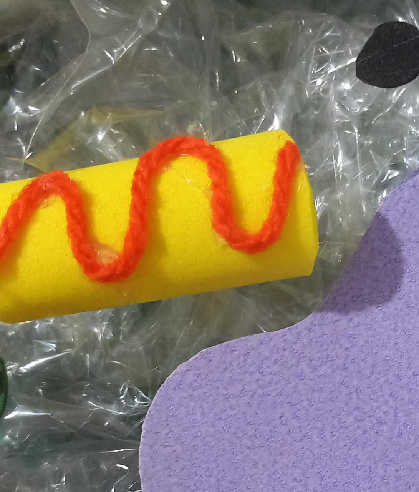
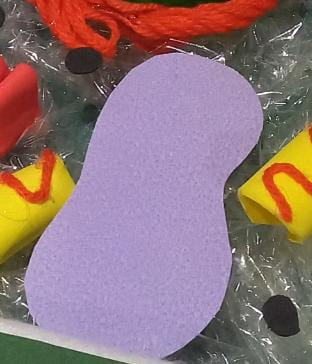
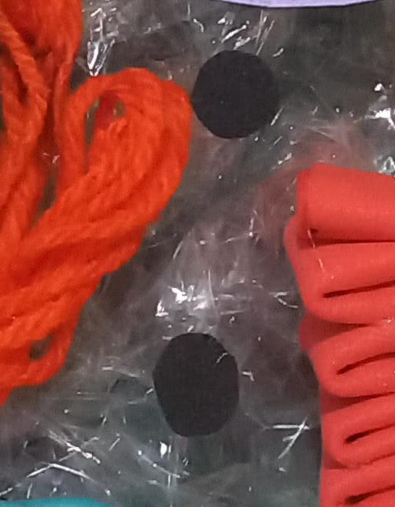
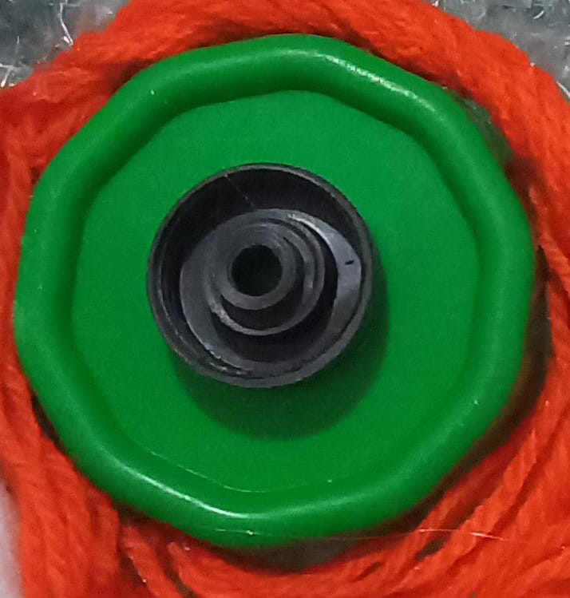
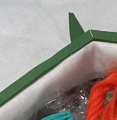
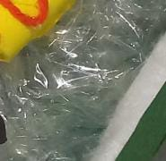
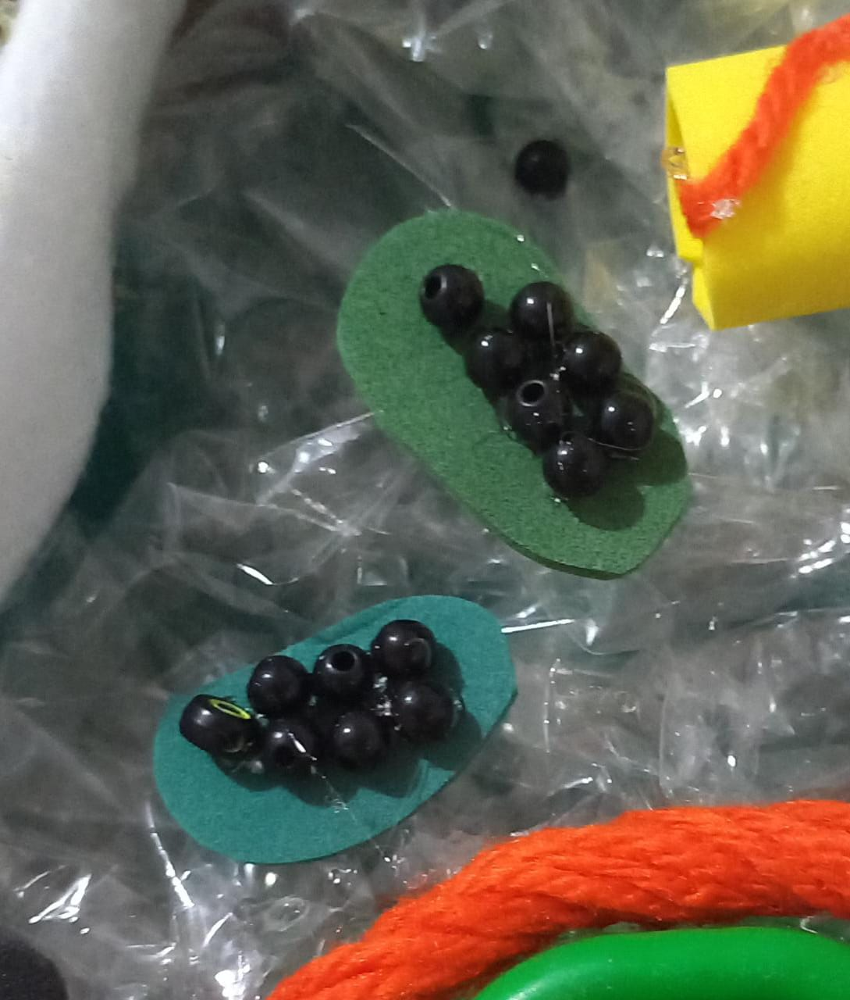
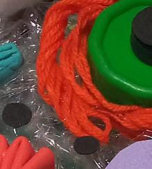
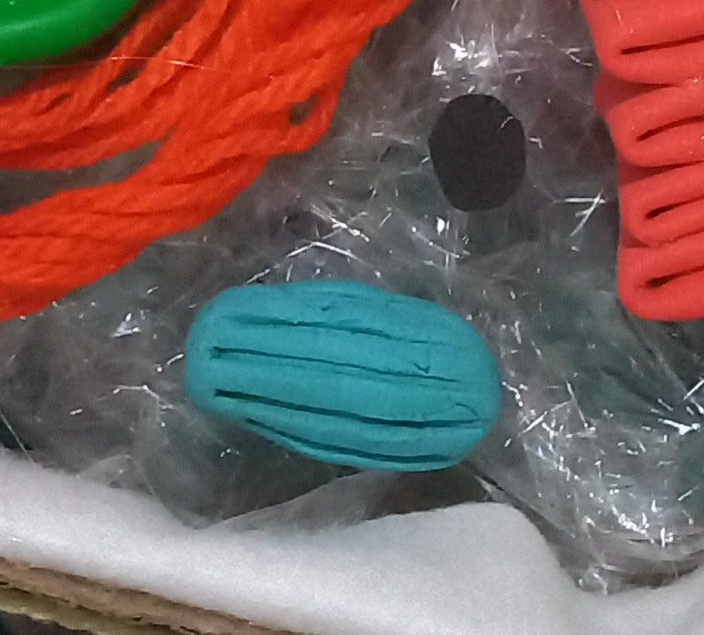
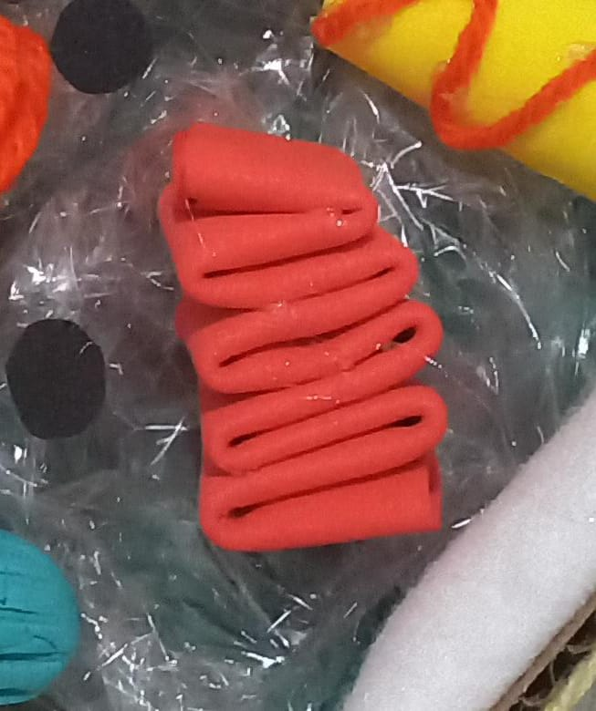

Se você, assim como nós, também gosta de adquirir conhecimento sobre Citologia, entrou no lugar correto. Este site foi uma atividade proposta para os
3° anos de informática do projeto integrador com a união da matéria de Biologia e Autoria Web.
Nesse site você poderá se aprofundar em células procarióticas, células eucarióticas animais e vegetais e a teoria da Endossimbiose. Para navegar entre as
páginas com cada conteúdo, você deve clicar nos links.
Qual foi a atividade proposta pelos professores?
O nosso grupo ficou responsável pela confecção de maquetes sobre as células procarióticas e comparar com as células eucarióticas, sendo elas:
animais e vegetais. Além da produção dessas maquetes feitas com o mínimo de gastos possíveis, teremos que relacionar também uma teoria conhecida como a Endossimbiose,
que é o processo do surgimento das células mais complexas, as eucarióticas. A nossa interação será feita via Instagram, na qual o grupo ficará responsável por abordar perguntas
nos stories relacionados ao tema das apresentações das maquetes. Cada pessoa interessada pelo quiz, terá acesso através do qr code.
Sobre a Citologia
Citologia é o ramo da biologia que estuda as células, suas funções e sua importância na constituição dos seres vivos. Também conhecida como biologia celular, é o estudo que busca compreender o ciclo
de vida destes seres, além dos seus reflexos no funcionamento de diferentes meios.
Esta área surgiu após o desenvolvimento de técnicas de microscopia óptica. Assim, foi possível observar estruturas muito pequenos que foram nomeadas de célula.
A necessidade de saber
mais sobre esses seres resultou no avanço de tecnologias que impulsionaram ainda mais os estudos, como o surgimento do microscópio eletrônico e suas técnicas.
Por ser um ramo da biologia focado no estudo das estruturas celulares, seus conhecimentos são de grande importância para a compreensão do
funcionamento de todos os organismos vivos.
Quero saber mais sobre Citoligia ou clique no vídeo abaixo:
Mitocôndrias

As mitocôndrias são organelas que pertencem às células eucariontes e são responsáveis pela respiração celular.
O termo mitocôndria surgiu em 1898 e foi proposto pelo médico Carl Benda e descrita pela primeira vez em 1857.
Qual característica:
Mitocôndrias são organelas celulares de formato esférico ou alongado que medem cerca de 10 μm de comprimento e de 0,5 a 1,0 μm de largura. Elas apresentam duas membranas, uma mais interna e outra mais externa. A membrana mais interna
apresenta várias dobras, que formam as cristas mitocondriais. Essas cristas aumentam a superfície da organela, facilitando as reações químicas que nela ocorrem, além de apresentarem enzimas importantes.
Origem:
Acredita-se que as mitocôndrias surgiram a partir de organismos procariontes que encontraram abrigo no interior de outras células. Essas duas células estabeleceram uma
relação simbiótica, ou seja, a interação entre as duas células gerou benefícios para ambos os envolvidos (teoria endossimbiótica). Enquanto o organismo procarionte encontrava proteção, a célula hospedeira obtinha a energia
necessária para a realização de suas atividades.
Vacúolo

Os vacúolos são estruturas celulares envolvidas por membrana plasmática, muito comuns em plantas e presentes também
em protozoários e animais. Tem diferentes funções como: regular pH, controlar a entrada e saída de água por osmorregulação, armazenar
substâncias, fazer a digestão e excretar os resíduos. Eles geralmente são esféricos, mas podem ser alongados. São de 3 tipos diferentes, a saber:
vacúolo de suco celular
vacúolo digestivo
vacúolo contráteis
Os vacúolos de suco celular, geralmente chamados somente vacúolos, são muito comuns, sendo menores e mais numerosos na planta jovem, se tornam único e grande nas plantas maduras. Tem função de reserva de substâncias, como amido e pigmentos, e atuam no mecanismo de pressão osmótica que regula a entrada e saída de água.
Esses vacúolos realizam a digestão intracelular e estão presentes em protozoários e em células animais e humanas como os macrófagos.
Nos protozoários e em alguns organismos mais simples como os poríferos os vacúolos também estão presentes. São chamados vacúolos contráteis ou pulsáteis e controlam a entrada e saída de água da célula por osmose. Eles também realizam o armazenamento de substâncias.
Ribossomos

Ribossomos são estruturas, relacionadas com a síntese proteica, que ocorrem em todos os tipos celulares, até mesmo em procariontes.
Livres no citosol, ou associados às membranas, os ribossomos são fundamentais para o funcionamento celular e sobrevivência do indivíduo. Características:
Trata-se de pequenas partículas que medem de 20 nm a 30 nm, sem membranas e formadas por proteínas e RNA ribossomal (RNAr). Alguns autores afirmam que os ribossomos são organelas não membranosas, outros, no entanto, assumem a ideia de que eles, devido à ausência de membranas, não podem ser considerados organelas celulares.
Nos eucariotos, os ribossomos são formados por quatro tipos de RNA ribossomal e, aproximadamente, 80 proteínas diferentes.
A maior parte do RNA ribossomal é produzida no nucléolo, enquanto as proteínas são produzidas no citoplasma. As proteínas que formarão o ribossomo migram do citoplasma para o núcleo
e associam-se aos RNA ribossomais, formando subunidades, que migram para o citoplasma.
O ribossomo só é funcional quando temos as subunidades unidas.
Os ribossomos são formados por duas subunidades: subunidade maior e subunidade menor. Essas saem do núcleo separadas, mas se unem no citoplasma.
Um ribossomo funcional é formado por ambas unidas e ligadas a uma molécula de RNA mensageiro (RNAm).
Esse ribossomo funcional é responsável por garantir a síntese de proteínas, e, quando o complexo é formado, podemos observar quatro sítios de ligação distintos, um
sítio na unidade menor e três sítios na unidade maior (sítios P, A e E):
Sítio para ligação da molécula de RNA mensageiro presente na unidade menor.
Sítio P: Nesse local observa-se uma molécula de RNA transportador (RNAt) ligada à cadeia polipeptídica que está se formando.
Sítio A: Nesse local observa-se a presença de RNA transportador carregando o próximo aminoácido, que será ligado à cadeia polipeptídica.
Sítio E: Nesse local de saída, os RNA transportadores descarregados deixam o ribossomo.
Onde podem ser encontrados:
Os ribossomos podem ser encontrados livres no citosol (ribossomos livres) ou então ligados à membrana do retículo endoplasmático e do envelope nuclear (ribossomos ligados).
Não podemos esquecer-nos ainda dos ribossomos encontrados no interior de cloroplastos e mitocôndrias e que se destacam por serem menores que os outros citados. Nas células procariontes, em que não há núcleo
definido, nem organelas membranosas, os ribossomos são encontrados apenas livres no citosol.
Núcleo

A estrutura do núcleo da célula vegetal é igual a da célula animal.
O núcleo é formado por: carioteca, nucleoplasma, cromatina e nucléolo
A carioteca desprende o núcleo do citoplasma.
O nucleoplasma é formado de proteínas e água, dentro deles estão os cromossomos e o nucléolo.
A cromatina forma todo o material genético do núcleo.
O Nucléolo é uma estrutura minúscula, mas cheia de RNA.
Membrana

A membrana está situada internamente à parede celular, envolvendo, portanto, o citoplasma. Como a membrana plasmática de outros tipos celulares, a membrana
da célula vegetal é composta por uma bicamada lipídica, em que proteínas estão inseridas. A membrana plasmática
desempenha diferentes funções, merecendo destaque o controle da entrada e saída de substâncias da célula.
Citoplamas

o Citoplasma
está localizado entre a membrana plasmática e o núcleo da célula. Na matriz citoplasmática (citosol) estão imersas várias organelas celulares.
No citoplasma ocorrem diferentes reações químicas e muitas substâncias do metabolismo da planta são acumuladas. Além disso, ele facilita a troca de substâncias dentro da célula e entre as células adjacentes. No citosol está presente o citoesqueleto, o qual é formado, em células vegetais, por dois elementos: microtúbulos e microfilamentos. O citoesqueleto é uma rede de filamentos proteicos que atuam em diferentes
processos, tais como movimento de organelas e divisão, crescimento e diferenciação da célula.
Cloroplastos

Os Cloroplastos
são organelas celulares nas quais ocorrem o processo de fotossíntese. Possuem carotenoides e clorofilas, sendo as clorofilas os pigmentos responsáveis pela coloração verde típica dessas estruturas.
São encontrados em todas as partes verdes da planta, porém são mais numerosos nas folhas.
Retículo endoplasmático

O Retículo endoplasmático constitui um complexo sistema de membranas. Pode ser dividido em dois tipos: retículo endoplasmático liso e rugoso. O retículo endoplasmático liso ou agranular não está associado a ribossomos, enquanto o retículo endoplasmático rugoso ou granular está associado a ribossomos.
O retículo endoplasmático rugoso está relacionado com a síntese de proteínas de exportação,
enquanto o retículo endoplasmático liso está relacionado com a síntese lipídica.
Glioxissomos

Os Glioxissomos são peroxissomos especiais encontrados nas células de plantas e sementes em germinação.
A diferença entre os dois é que os glioxissomos agem em algumas reações do processo de fotossíntese, estando relacionados à fixação do gás carbônico.
Já nas sementes, os efeitos dessas organelas são importantes na transformação de ácidos graxos em substâncias de menor tamanho, que por sua vez serão convertidas
em glicose e utilizadas pelo embrião em germinação. Além disso, convertem lipídios em carboidratos.
Complexo golgiense

O Complexo de Golgi é a parte diferenciada do sistema de membranas no interior celular, que se encontra tanto nas células animais
quanto nas células vegetais. Esta organela celular se localiza entre o retículo endoplasmático (RE) e a membrana plasmática.
Localização e composição do Complexo de Golgi:
O complexo de Golgi situa-se próximo do núcleo celular e é formado por unidades, os dictiossomas, que estão ligados entre si.
Cada dictiossoma é composto por um conjunto de sacos ou cisternas discoides e aplanadas, cercadas de vesículas secretoras de diversos tamanhos.
Cada dictiossoma agrupa, em média, seis cisternas, entretanto, em alguns casos, esta quantidade pode atingir
cinco vezes mais. O número de dictiossomas pode variar desde poucas unidades até algumas centenas, isto ocorrerá de acordo com a função realizada pelas células eucariotas.
função:
A função mais importante do Complexo de Golgi é a secreção das proteínas produzidas no retículo endoplasmático rugoso.
Durante este processo, as membranas das vesículas se juntam com a membrana plasmática de tal maneira, que esta se regenera.